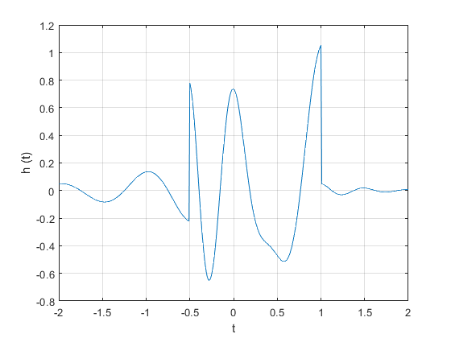

Práctica 3: Señales continuas
Contents
Integrantes
- Garduño Sandoval Susana Itzel
- Villavicencio Castillo Rodrigo Adrian
- Vargas Martinez Javier
Objetivos
- Manipulación básica de MATLAB
- Gráficas de señales reales y complejas continuas
- Calculo de energía y potencia de señales continuas
Introduccion
Una breve historia de MATLAB
%Por Cleve Moler, MathWorks %El primer MATLAB ® no era un lenguaje de programación; Era una calculadora matricial interactiva simple. No había programas, ni cajas de herramientas, ni gráficos. Y no hay EDO o FFT. %En este Rincón de Cleve, describiré algunos hitos en la evolución de MATLAB desde esos simples comienzos. %Orígenes matematicos %La base matemática para la primera versión de MATLAB fue una serie de trabajos de investigación de JH Wilkinson y 18 de sus colegas, publicados entre 1965 y 1970 y recopilados posteriormente en el Manual para computación automática, volumen II, Álgebra lineal, editado por Wilkinson y C. Reinsch Estos documentos presentan algoritmos, implementados en Algol 60, para resolver problemas de ecuación lineal de matriz y valores propios. %EISPACK y LINPACK %En 1970, un grupo de investigadores en el Laboratorio Nacional de Argonne propuso a la Fundación Nacional de Ciencia de los Estados Unidos (NSF) "explorar la metodología, los costos y los recursos necesarios para producir, probar y difundir software matemático de alta calidad y probar, certificar, diseminar y dar soporte a paquetes de software matemático en ciertas áreas problemáticas ”. El grupo desarrolló EISPACK (Matrix Eigensystem Package) traduciendo los procedimientos de Algol para problemas de valores propios del manual en Fortran y trabajando extensamente en pruebas y portabilidad. La primera versión de EISPACK se lanzó en 1971 y la segunda en 1976. %En 1975, cuatro de nosotros, Jack Dongarra, Pete Stewart, Jim Bunch y yo, propusimos a la NSF otro proyecto de investigación que investigaría métodos para el desarrollo de software matemático. Un subproducto sería el propio software, denominado LINPACK, para el paquete de ecuaciones lineales. Este proyecto también se centró en Argonne. %LINPACK se originó en Fortran; no implicaba traducción de algol. El paquete contenía 44 subrutinas en cada una de las cuatro precisiones numéricas. %En cierto sentido, los proyectos LINPACK y EISPACK fueron fallos. Habíamos propuesto proyectos de investigación a la NSF para "explorar la metodología, los costos y los recursos necesarios para producir, probar y difundir software matemático de alta calidad". Nunca escribimos un informe o documento sobre esos objetivos. Solo producimos software. %MATLAB historico %En la década de 1970 y principios de la década de 1980, estaba enseñando Álgebra Lineal y Análisis Numérico en la Universidad de Nuevo México y quería que mis estudiantes tuvieran fácil acceso a LINPACK y EISPACK sin escribir los programas de Fortran. Con "acceso fácil", me refería a no pasar por el procesamiento por lotes remoto y el proceso repetido de edición-compilación-enlace-carga-ejecución que normalmente se requería en la computadora central del campus. %Entonces, estudié el libro Algoritmos + Estructuras de datos = programas de Niklaus Wirth y aprendí a analizar lenguajes de programación. Escribí el primer MATLAB, un acrónimo de Matrix Laboratory, en Fortran, con la matriz como el único tipo de datos. El proyecto fue una especie de pasatiempo, un nuevo aspecto de la programación para que yo pueda aprender y algo para que mis alumnos usen. Nunca hubo ningún apoyo externo formal, y ciertamente ningún plan de negocios. %Este primer MATLAB fue solo una calculadora matricial interactiva. Esta instantánea de la pantalla de inicio muestra todas las palabras y funciones reservadas. Solo hay 71. Para agregar otra función, tenía que obtener el código fuente de mi parte, escribir una subrutina Fortran, agregar el nombre de su función a la tabla de análisis y recompilar MATLAB. %Pasé el año académico 1979–80 en Stanford, donde enseñé el curso de posgrado en Análisis Numérico e introduje la clase en esta calculadora matricial. Algunos de los estudiantes estaban estudiando temas como la teoría de control y el procesamiento de señales, de los que no sabía nada. Sin embargo, las matrices fueron fundamentales para las matemáticas en estas asignaturas, y MATLAB fue de utilidad inmediata para los estudiantes.
Ejercicio 1. fun1
Crea una función que se llame fun1 y reciba dos parametros y la función debe regresar la evaluación , esta función debe trabajr con y . Debe mostrar su código en el reporte (sin ejecutar).
function [F] = fun1(w,a) F = a./(a^2+w.^2); end
Ejercicio 2. Graficador
graficador1(fun1(linspace(-2,2),1),-2,2);
Ejercicio 3: Graficador 2
%Construya una función que gráfique funciones de $f:R\rightarrow R^2$ en el formato de su elección y pruebe su código mostrando la gráfica de la transformada de Fourier $F(w)$ en $[-10,10]$ de la función $f(t)=e^{-2t}u(t)$, puede utilizar una función anonima para este fin, no debe incluir el código, solo el uso de la función para mostrarla gráfica. Reporte la gráfica de $f(t)$ de $[-1,5]$ (recuerde que ya tiene una función para esto). Reporte del espectro de magnitud y del espectro de fase en $[-10,10]$ (puedes con sultar con help la descripción de abs, angle, atan2). Solo reporte las graficas. %syms t w %f = exp(-2*t)*heaviside(t); %F = fourier(f,t,w); graficador1(@(t) exp(-2*t).*(t>=0),-1,5);
Ejercicio 4. Operaciones varias del libro Lathi
M1 .1
Se graficara la funcion
% Se le pide al usuario ingresar un rango de evaluacion para la variable t % a=input('Ingrese lim inferior :'); % b=input('Ingrese lim superior :'); t=(-2:0.01:2); F= @(t)exp (t.*-1).*cos(2*pi*t); f=F(t); figure(1); plot(t,F(t),'r'); grid; xlabel('t');ylabel('f (t)');
M1 .2
En el presente ejercicio se muestra graficamente un escalon unitario
%%(al escalon se le pasa un vector t:(-2:2)) t2=-2:2; u = @(t2) t2>=0; figure(2) plot(t2,u(t2),'b'); xlabel('t');ylabel('f (t)');grid;
% Como tal la grafica no nos define un escalon unitario, puesto que, % solo se grafica una recta; haciedo unos cambios en el codigo % esta nueva grafica nos muestra lo siguiente figure(3) t3 = (-2:0.01:2); plot (t3,u(t3)); xlabel('t'); ylabel('u (t)');grid; axis ([-2 2 -0.1 1.1]); % Los cambios fueron que al vector t, se le dan aun mas peque?intervalos % del rango -2<t<2 % Y se elige un escalamiento m?optimo para visualizar u(t)
% Para finalizar con este inciso se muestra una grafica comun en se?s. %El pulso unitario figure(4) p=@(t4) (t4>=0) & (t4<1); t4=(-1:0.01:2); plot(t4,p(t4)); xlabel('t'); ylabel('p(t)=u(t)-u (t-1)');grid; axis([-1 2 -.1 1.1]);
M1 .3
En este inciso se realizaran operaciones de escalamiento y desplazamiento de se?s Definimos la siguiente se? % Como tal, en el entorno de matlab no es posible hacer dicha multiplicacion de se?s, se necesita escribir explicitamente g(t) Despues se pueden aplicar escalamientos & desplazamientos Ejemplo, se busca la grafica de en un intervalo de -2<t<2
figure(5); g=@(t5) exp (-t5).*cos (2*pi*t5).*(t5>=0); t5 = (-2:0.01:2); plot(t5,g(2*t5+1)); xlabel('t'); ylabel('g (2t+1)'); grid;
% Ahora consideramos la grafica $g(-t+1)$ en el mismo intervalo -2<t<2 figure(6); plot(t5,g(-(t5)+1)); xlabel('t'); ylabel('g (-t+1)'); grid;
% Dadas las dos graficas anteriores se busca mostrar la grafica de % la siguiente operacion entre estas se?s % $g(2t + 1) + g(-t + 1)$ figure(7); plot(t5,g(2*t5+1) +g(-t5+1)); xlabel('t'); ylabel('h (t)'); grid;
M1 .4
En este inciso se requiere calcular la energ?e una se?dada Dicha se?es: Y la energ?e define como:
x=@(t6)exp (-t6).*((t6>=0)&(t6<1)); t6 = (0:0.01:1); E =sum(x (t6).*x(t6)*0.01); x_squared=@(t6)exp (-t6).*((t6>=0)&(t6<1)); E = quad(x_squared,0,1); display(E);
E =
0.6321
Ejercicio 5. Graficas
Resuelve el problema 1.2.2 usando las herramientas del paso anterior.
%%Graficas %x(t) t9=(-7:0.01:7); u = @(t9) -t9.*((t9>=-4) & (t9<0)) + t9.*((t9>=0) & (t9<2)); subplot(2,3,1); plot(t9,u(t9),'b'); title('x(t)'); xlabel('t'); ylabel('f (t)'); grid; %x(t-4) subplot(2,3,2); plot(t9,u(t9-4),'g'); title('x(t-4)'); xlabel('t'); ylabel('f (t)'); grid; %x(t/1.5) subplot(2,3,3); plot(t9,u(t9/1.5),'g'); title('x(t/1.5)'); xlabel('t'); ylabel('f (t)'); grid; %x(-t) subplot(2,3,4); plot(t9,u(-t9),'g'); title('x(-t)'); xlabel('t'); ylabel('f (t)'); grid; %x(2t-4) subplot(2,3,5); plot(t9,u(t9.*2-4),'g'); title('x(2t-4)'); xlabel('t'); ylabel('f (t)'); grid; %x(2-t) subplot(2,3,6); plot(t9,u(-(t9-2)),'g'); title('x(2-t)'); xlabel('t'); ylabel('f (t)'); grid;
Ejercicio 6. Energia
function [E] = energia(f) if strcmp(class(f),'function_handle') %funcion anonima disp('Es una funcion anonima'); E = integral(f,-Inf,Inf); else %Una expresion con variables simbolicas y funcion anonima E = int(abs(f)*abs(f),x,-Inf,Inf); %Calcula la integral definida de f respecto de la variable s. end end
Ejercicio 7. Potencia
function [P] = potencia(f) T = input('Cuanto vale T en la funcion: '); if strcmp(class(f),'function_handle') %funcion anonima disp('Es una funcion anonima'); P = integral(f,-T/2,T/2); else %Una expresion con variables simbolicas y funcion anonima P = int(f,x,-T/2,T/2); %Calcula la integral definida de f respecto de la variable s. end end